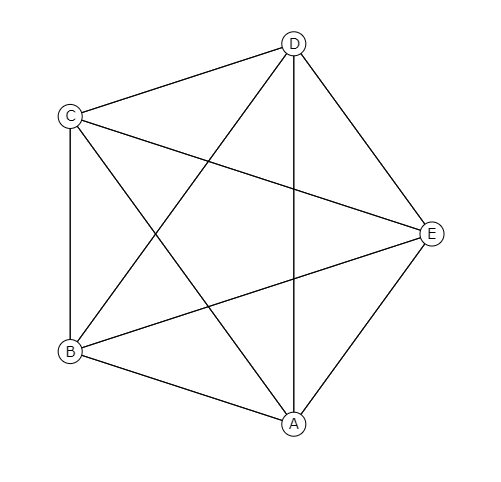

Graph

A Graph is a general data type that is expected to complete the undirected graph and directed graph theories of the domain of graph theory in mathematics and various computer science ideas. A graph data structure consists of a limited set of vertices, concurrently with a set of unordered pairs of these vertices for an undirected graph or a set of ordered pairs for a directed graph. These pairs are known as edges, and for a directed graph are also known as arrows.
Types of Graphs
Types of Graphs : Simple Graph
A simple graph also pronounced a strict graph is unweighted, an undirected graph containing no graph circuits or many edges. A simple graph may be either connected or disconnected.
- The maximum number of edges possible in a single graph with ‘n’ vertices is nC2.
where nC2 = n(n – 1)/2. - The number of simple graphs possible with ‘n’ vertices = 2nC2 = 2n(n-1)/2.
Types of Graph : Undirected Graph
In an undirected graph, the position of the vertices and the pairs in the Edge set doesn't matter. Undirected graphs usually are drawn with straight lines between the vertices.
The adjacency relation is symmetric in an undirected graph, so if (v1,v2) then it is also the case that (v2,v1)
The adjacency relation is symmetric in an undirected graph, so if (v1,v2) then it is also the case that (v2,v1)
Types of Graphs : Directed Graph
In a directed graph the position of the vertices and the pairs in the edge set matters. Thus v1 is adjacent to v2 only if the pair (v1,v2) is in the Edge set. For directed graphs, we usually use arrows for the arcs between vertices. An arrow from v1 to v2 is drawn only if (v1,v2) is in the Edge set.
Types of Graph : Cyclic Graph

A cyclic graph is a directed graph with at least one cycle. A cycle is a path along the directed edges from a vertex to itself. The vertex labeled graph above as several cycles.
Types of Graphs : Acyclic Graph
An acyclic graph is a graph having no graph cycles. Acyclic graphs are bipartite.A connected acyclic graph is known as a tree, and a possibly disconnected acyclic graph is known as a forest.
Types of Graph : Infinite Graph
A graph is said to be infinite if it has infinite number of vertices as well as infinite number of edges.
Types of Graph : Finite Graph
A graph is said to be finite if it has finite number of vertices and finite number of edges.
Types of Graphs : Trivial Graph

A graph is said to be trivial if a finite graph contains only one vertex and no edge.
Types of Graph : Complete Graph

In the area of graph theory, a complete graph is a simple undirected graph in which every two distinct vertices are connected by a unique edge. A complete digraph is a directed graph in which every pair of distinct vertices is connected by a set of different edges (unit in each direction).
Vertices : n
Edges : n(n-1)/2
Notation : Kn
Vertices : n
Edges : n(n-1)/2
Notation : Kn